The craft that does not fit neatly into a case study
Case studies are organised by client, which means the interface work gets scattered across seven of them, a component decision here, a set of states there. This page collects it in one place. Same projects, looked at as design rather than as outcomes.
Designing inside a component library you cannot override
HubSpot UI extensions permit no custom CSS. You build from the platform's own components at the sizes they come in. That sounds like a limitation and mostly it is a discipline: every decision has to be justified against something measurable rather than settled by taste.
The Input, Select and DateInput components are 240
pixels wide across all 488 variants. Three editable columns at native size need 720 of the 774
pixels available in the card. So three inputs could not sit side by side, and editable cells
became compact fields that open the real control on click. The pattern is a consequence of a
measurement, not a style.
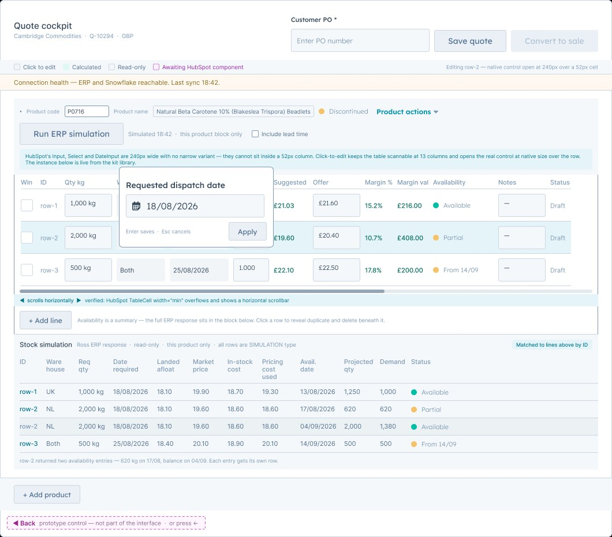
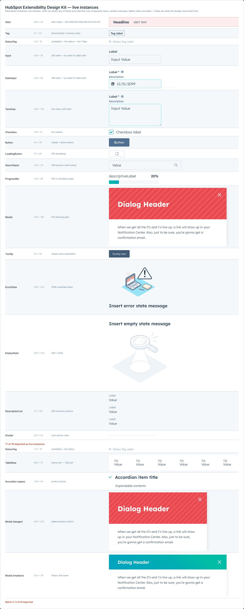
Systems, not screens
A site handed over as a set of pages falls apart the first time somebody needs a page nobody drew. The pieces that decide whether it holds are the unglamorous ones: a search system with every state documented, a navigation pattern that survives a growing service list, results blocks that work in both colour schemes.
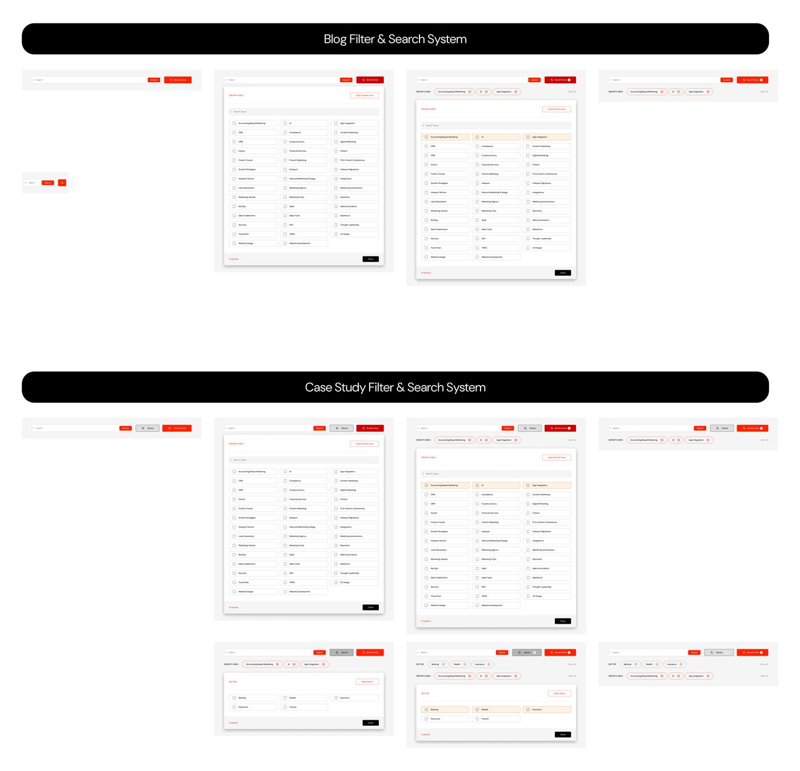
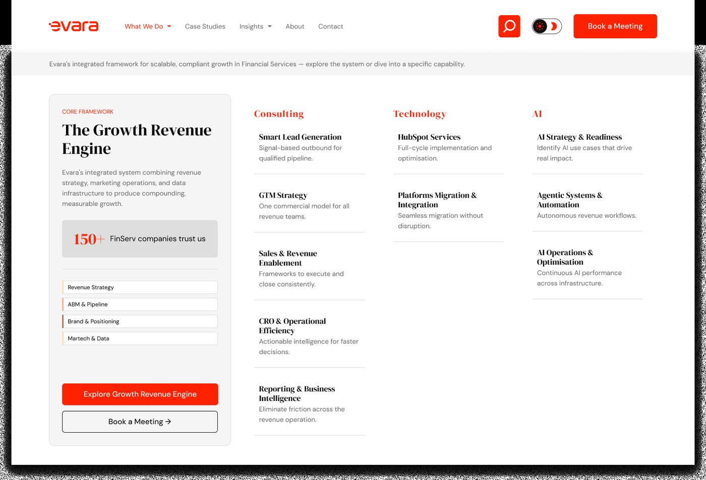
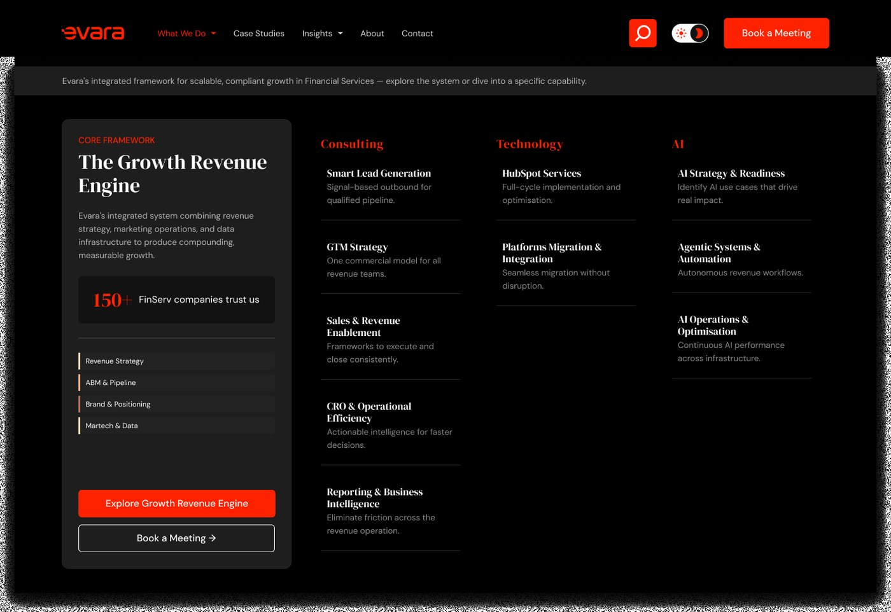
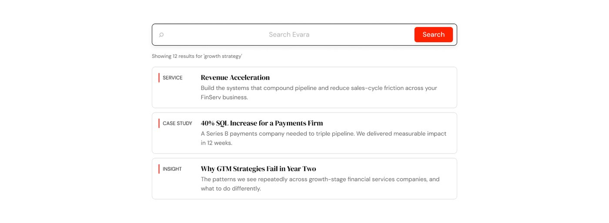
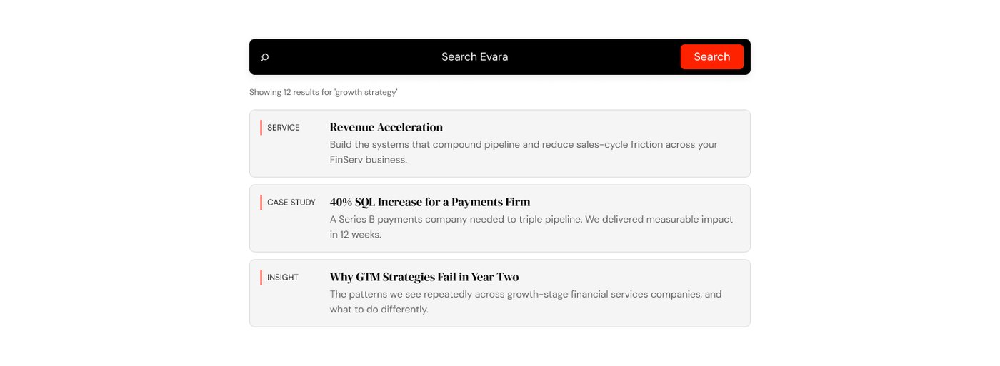
Light and dark, designed as a pair
Inverting a palette is not designing a dark mode. It breaks image treatments, kills contrast on accent colours, and turns considered shadows into grey smears. Both modes here were drawn from the start, which is why the photographic treatment and the accent both survive the switch.
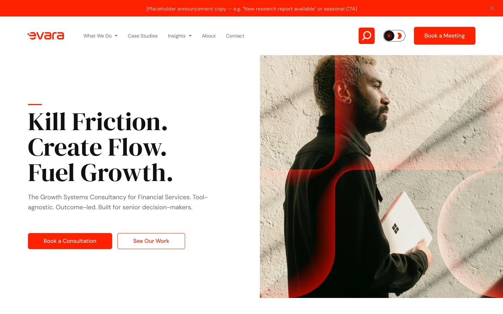
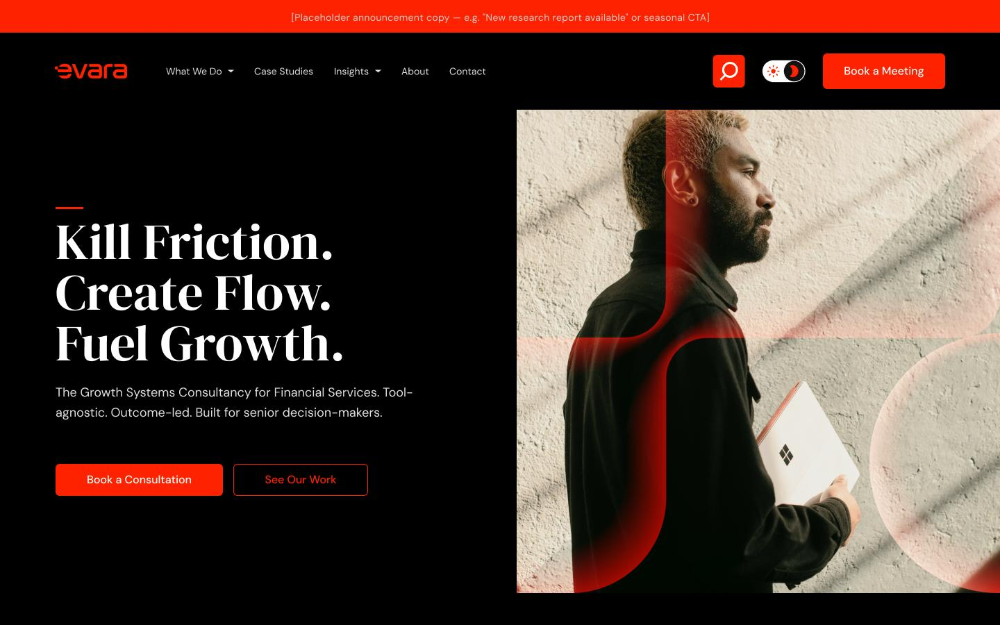
The states are the design
Most design work ships the happy path and leaves engineering to invent the error states. That is backwards. The error states are where somebody decides whether to trust a tool, and a tool nobody trusts does not get used regardless of how good the main flow looks.
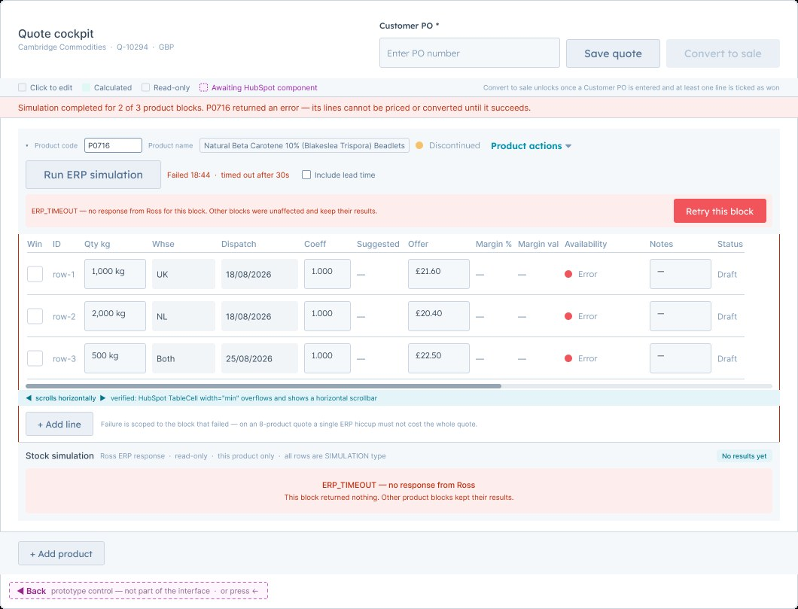
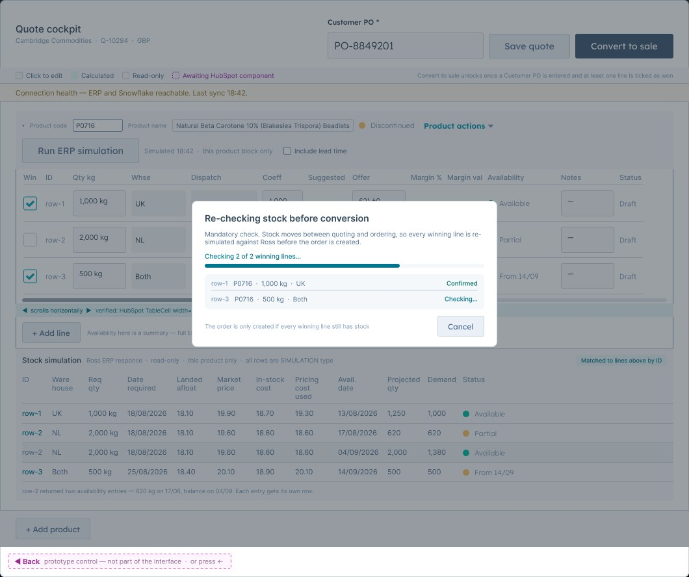
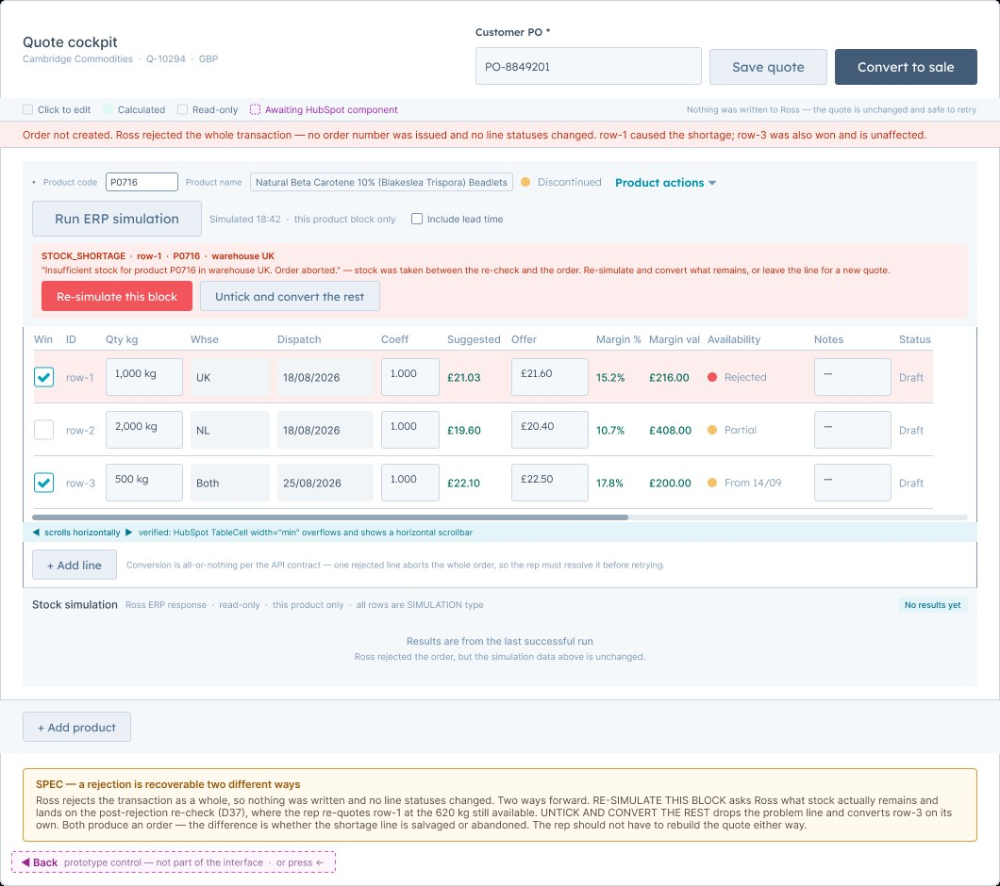
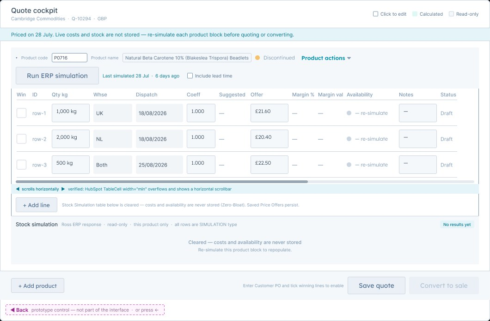
Templates that survive the client
The real test of a page design is what happens when a marketing team adds a page you never drew. So the deliverable is a template with its rules, not a one off layout.
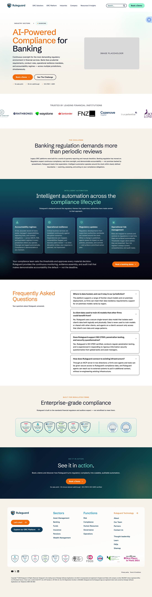
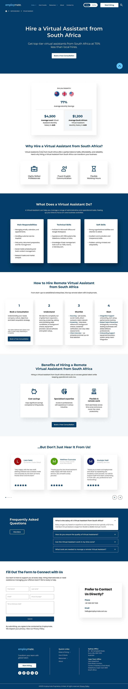
Mobile designed, not reflowed
A desktop layout squeezed into 390 pixels is a compromise everybody can feel. These were drawn at mobile width, with their own hierarchy decisions.
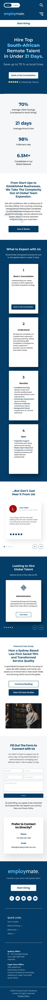
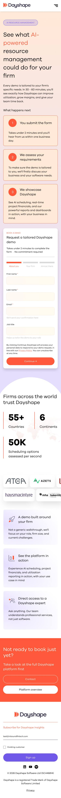
Accessibility as a design constraint, not a checklist
Contrast is the one accessibility requirement that is also a visual decision, which is why it is worth deciding rather than checking afterwards. On this site the accent had to change behaviour between schemes: the reference I designed from uses dark type on a light accent, but emerald is a dark hue, so near black on emerald measures 2.99 to 1 and fails, while white on emerald measures 6.25 to 1.
That is not a compliance detail, it is the reason the buttons look the way they do. The same logic drove a second token for accents sitting on dark surfaces, because the light mode emerald on the dark sidebar measured 2.93 to 1.
What that looks like in practice
Visible focus rings on every interactive element, a skip link, strictly hierarchical headings, real alt text describing what each image shows, reduced motion respected, zoom never disabled, and every image carrying its own dimensions so nothing shifts while the page loads. All of it is validated on every build rather than checked once.